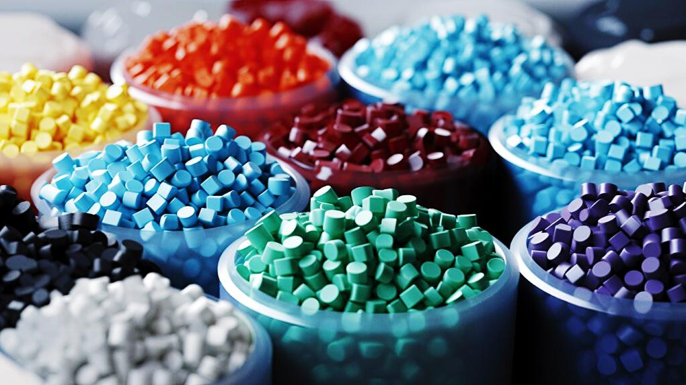

การปรับปรุงสมบัติของพอลิเมอร์
การปรับปรุงสมบัติของพอลิเมอร์ คือ กระบวนการทำให้พอลิเมอร์มีคุณสมบัติเหมาะสมกับการใช้งานมากขึ้น เช่น เพิ่มความแข็งแรง ความยืดหยุ่น ความทนทานต่อความร้อน ความทนต่อสารเคมี หรือช่วยให้สามารถขึ้นรูปเป็นผลิตภัณฑ์ได้ง่ายขึ้น การปรับปรุงสมบัติสามารถทำได้หลายวิธี โดยเลือกใช้ให้เหมาะกับชนิดของพอลิเมอร์และลักษณะงาน วิธีการปรับปรุงสมบัติของพอลิเมอร์มีหลายวิธี ได้แก่ การเติมสารเติมแต่ง (Additives) เป็นการเติมสารบางชนิดลงในพอลิเมอร์เพื่อเปลี่ยนแปลงหรือเพิ่มสมบัติที่ต้องการ เช่น สารเพิ่มความยืดหยุ่น สารเพิ่มความคงตัวต่อความร้อน สารป้องกันการเสื่อมสภาพจากแสง และสารเติมสี การผสมพอลิเมอร์ (Polymer Blending) เป็นการนำพอลิเมอร์ต่างชนิดมาผสมกัน เพื่อให้ได้วัสดุที่มีสมบัติรวมกันหรือมีสมบัติใหม่ตามต้องการ เช่น การผสมพอลิเมอร์เพื่อเพิ่มความเหนียว ความแข็งแรง หรือความสามารถในการขึ้นรูป และการเชื่อมโยงสายโซ่พอลิเมอร์ (Cross-linking) เป็นการสร้างพันธะเชื่อมระหว่างสายโซ่พอลิเมอร์ ทำให้เกิดโครงสร้างที่มีความเชื่อมโยงกันมากขึ้น ส่งผลให้วัสดุมีความแข็งแรง ทนทาน และทนต่อการเปลี่ยนรูปได้ดี ตัวอย่างที่สำคัญคือการวัลคาไนซ์ยาง ซึ่งใช้สารเชื่อมโยงเพื่อปรับปรุงสมบัติของยางให้เหมาะกับการใช้งาน เช่น ยางรถยนต์ การปรับปรุงสมบัติของพอลิเมอร์ช่วยให้สามารถพัฒนาวัสดุที่มีประสิทธิภาพสูงขึ้น ลดข้อจำกัดของพอลิเมอร์เดิม และเพิ่มความเหมาะสมต่อการใช้งานในด้านต่าง ๆ เช่น อุตสาหกรรมยานยนต์ การแพทย์ บรรจุภัณฑ์ และการก่อสร้าง นอกจากนี้ยังช่วยพัฒนาวัสดุที่มีความทนทานและมีอายุการใช้งานเหมาะสมกับความต้องการของมนุษย์